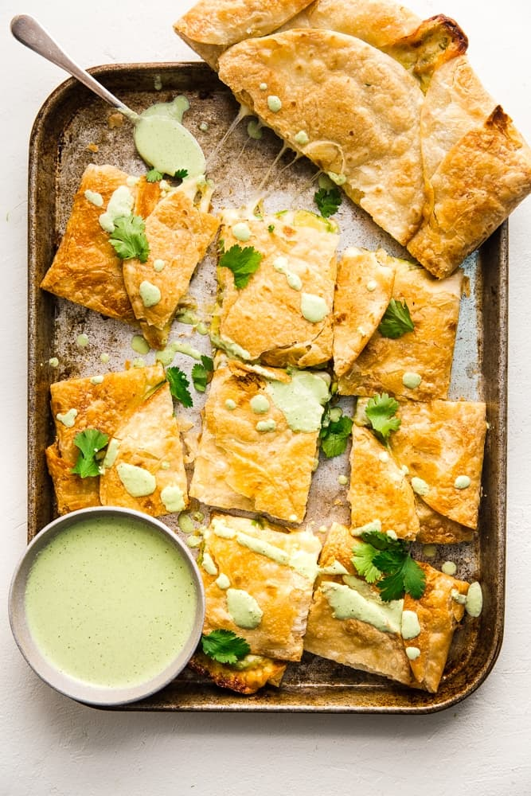

Sheet Pan Quesadilla with Jalapeno Ranch

Description
This sheet pan quesadilla recipe is perfect for parties or gameday and even comes with a delicious jalapeno ranch side to dip it in. This recipe can be modified to your liking by adding meat or toppings such as salsa or guacamole to take it to another level.
Ingredients
Quesadillas
- 10 8-10" tortillas
- 1 cup shredded mozzarella cheese
- 1 cup shredded pepperjack cheese
- 2 large avocados, thinly sliced
- 1/2 cup green onion, minced
Jalapeno Ranch Sauce
- 1/2 cup mayonnaise
- 1/2 sour cream
- 1tsp onion powder
- 1tsp garlic powder
- Salt
- 1/4 cup cilantro, finely minced
- 1/2 cup pickled jalapenos, drained
- 2tbsp lime juice
Steps
- Preheat the oven to 425°F.
- On a large greased baking sheet arrange six tortillas around the perimeter so that half of each tortilla is hanging over the edge. Fill the middle of the baking sheet with two more tortillas.
- Top with grated cheese followed by sliced avocados and green onions.
- Fold the overhanging tortilla into the center to cover the filling and finish off with two more tortillas over the center. Generously brush or spray tortillas with oil and place a second (oiled underneath) baking sheet on top of tortillas to keep tortillas flat while baking. Bake for 20 minutes covered, followed by 5 minutes uncovered or until golden and crispy.
- While quesadilla is cooking make the jalapeño ranch by blending all ingredients together using either an immersion blender, blender or food processor.
- Cut quesadilla into large squares and serve dipped into jalapeño ranch. Enjoy!